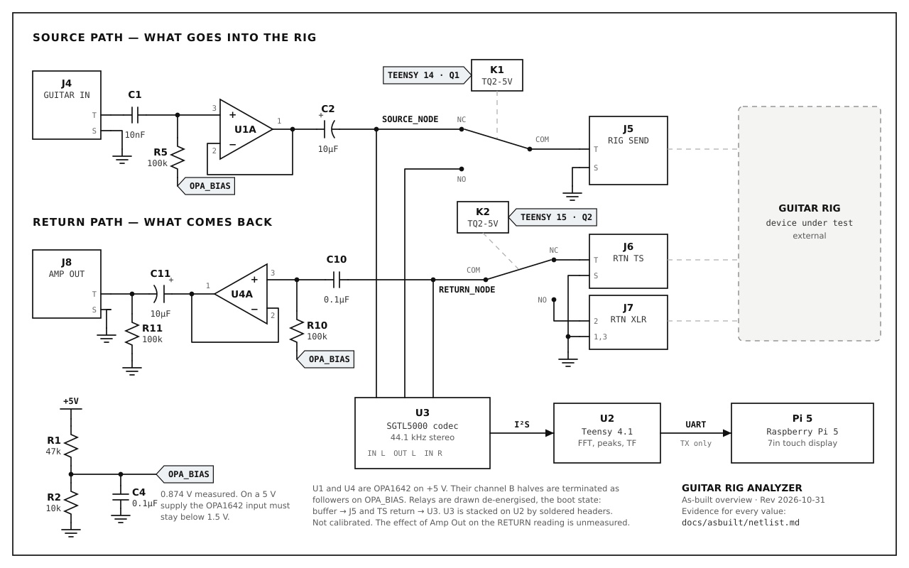
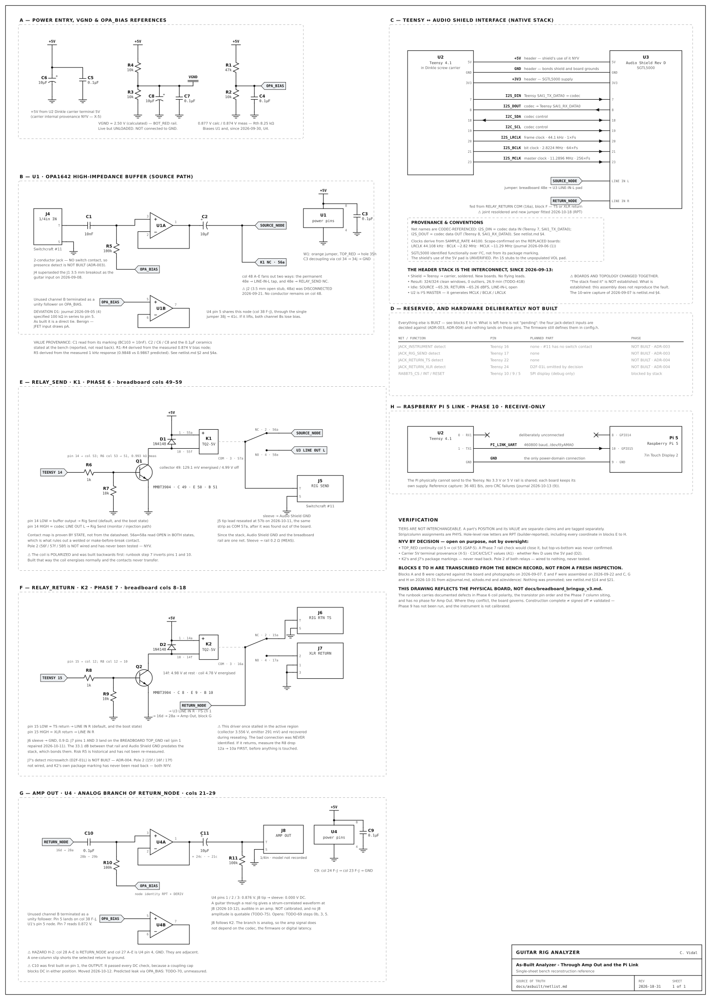
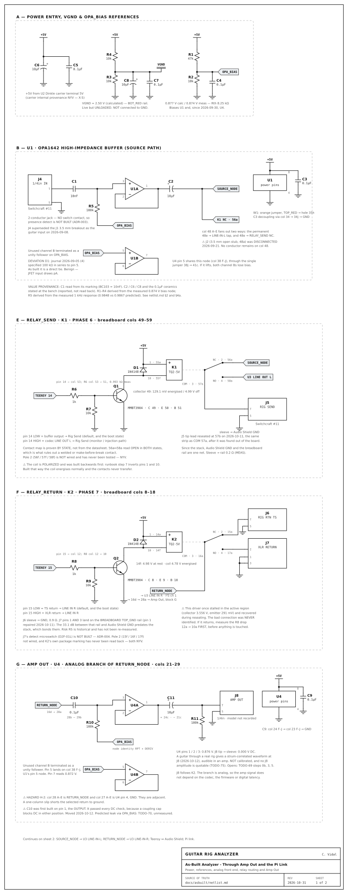
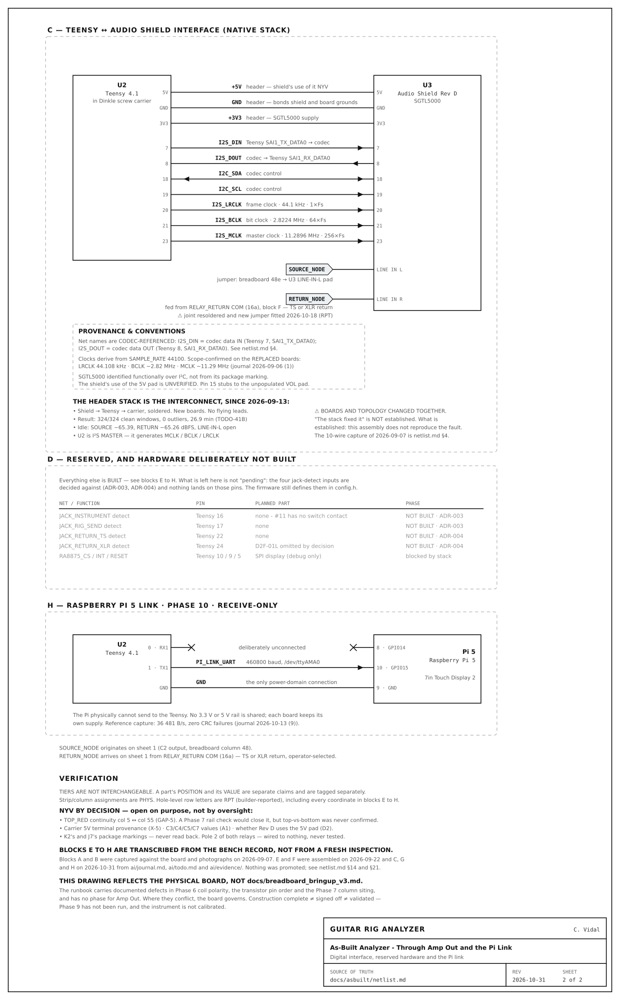

Guitar Rig Analyzer as-built schematics
Rev 2026-10-31. Generated by tools/gen_schematic.py from docs/asbuilt/netlist.md.
Overview: the whole signal path

Single sheet: bench reconstruction reference

Sheet 1 of 2: power, analog, relays, Amp Out

Sheet 2 of 2: digital, reserved hardware, Pi link
